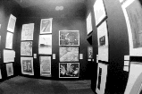
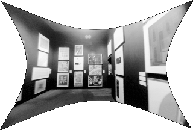
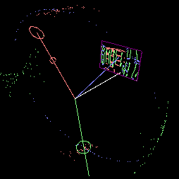
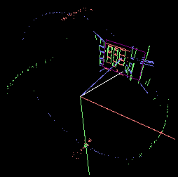
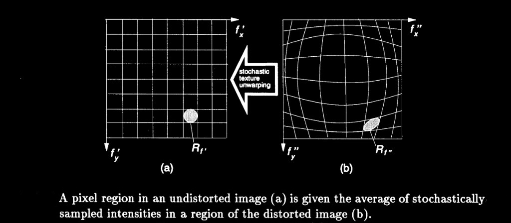

Semiautomatic camera lens calibration from partially known structure, MIT Media Lab. Line segments in a fisheye photograph are mapped from the center of projection to points and variances on a Gaussian sphere. Gradient descent finds the three radial (K1, K2, K3) and two decentering (P1, P2) distortion terms that minimize the variance of the focal points, so curved edges become straight and each set of parallel lines meets at one vanishing point. Pixels of the corrected image are sampled stochastically from regions of the distorted image. Photographs by Steve Mann (https://en.wikipedia.org/wiki/Steve_Mann_(inventor)).
Web page: http://alumni.media.mit.edu/~sbeck/results/Distortion/distortion.html
Skills: Computer Vision · Camera Calibration · Lens Distortion Modeling · Projective Geometry · Gaussian Sphere Vanishing Points · Gradient Descent Optimization · Stochastic Image Resampling · Algorithms · Computer Graphics · Statistical Data Analysis · Automated Software Testing (JUnit/Jest/Vitest/PyTest)
Dissertation: Vision-assisted modeling for model-based video representations, Shawn C. Becker, MIT, February 1997.
Fisheye photograph of the gallery before correction. Line segments are grouped into three scene directions.
Photograph by Steve Mann.
For a point (x, y) at radius r from the
image center, the distorted point (x', y') is
x' = x + x*(K1*r^2 + K2*r^4 + K3*r^6) + P1*(r^2 + 2*x^2) + 2*P2*x*y
y' = y + y*(K1*r^2 + K2*r^4 + K3*r^6) + P2*(r^2 + 2*y^2) + 2*P1*x*yK1, K2, and K3 are radial. P1 and P2 are decentering.
Each image segment is mapped from the center of projection onto the Gaussian sphere. Red, green, and blue are the three scene directions. The circle of each color is that direction's focal point, and the spread of the same-colored points is its variance.
Before correction the points of each color are widely dispersed. The red focal point lies toward the bottom of the sphere, the green focal point toward the right, and the blue focal point toward the top.

The center of projection and the endpoints of each image segment are mapped to points and variances on the Gaussian sphere. Those variance-weighted points are normalized to compute a new position and a new variance for each vanishing point on the sphere. Gradient descent finds the distortion parameters that minimize the variance of the focal points on the Gaussian sphere.
For this gallery photograph the estimated parameters are
K1: 1.105763E-01
K2: 1.886214E-02
K3: 1.473832E-02
P1: -8.448460E-03
P2: -7.356744E-03With those parameters applied, the red, green, and blue points draw into tighter arcs. The variance around each focal point is smaller, and each focal point lies on the great circle for its scene direction.

The same gallery photograph after the estimated distortion is removed. Edges that were curved are straight, and each set of parallel lines meets at one vanishing point.
Pixels of the corrected image are sampled from regions of the distorted image (dissertation Figure 4-4).
